We address the reviewers' concerns in the rebuttal text and provide corresponding visual evidence at this anonymous site.
Given an input image and a camera trajectory, we compare our method with prior works.
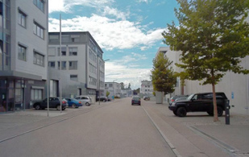
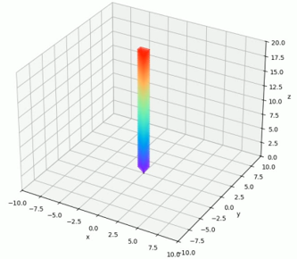
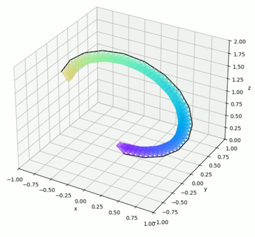
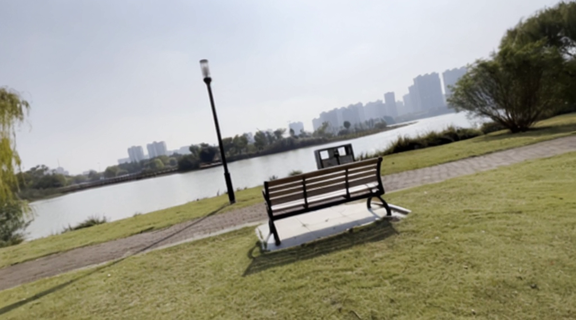
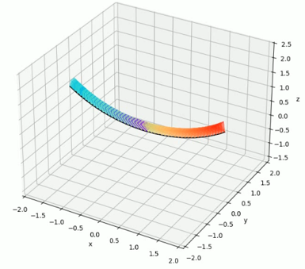
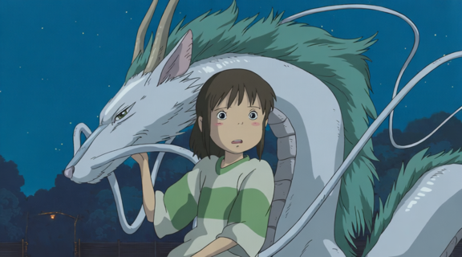
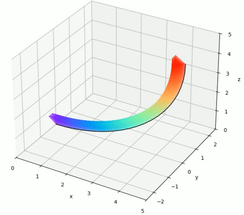
We provide additional visualizations and comparisons for the ablation studies.
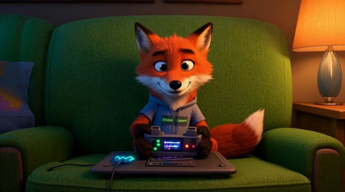
We provide additional qualitative visual results, including diverse scenes and camera trajectories.
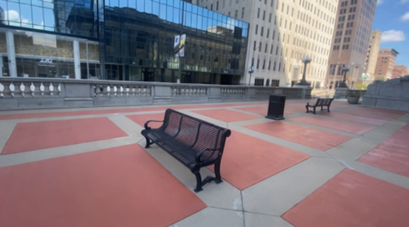
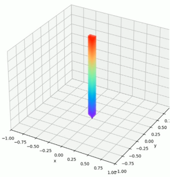
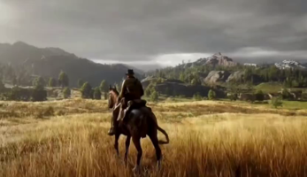
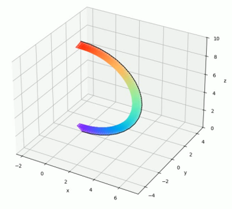
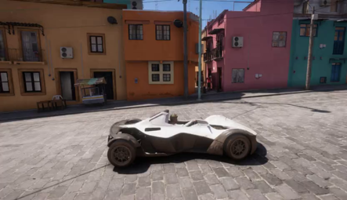
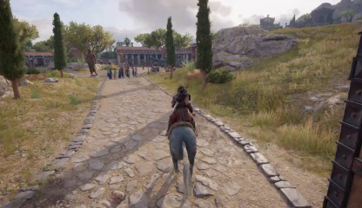